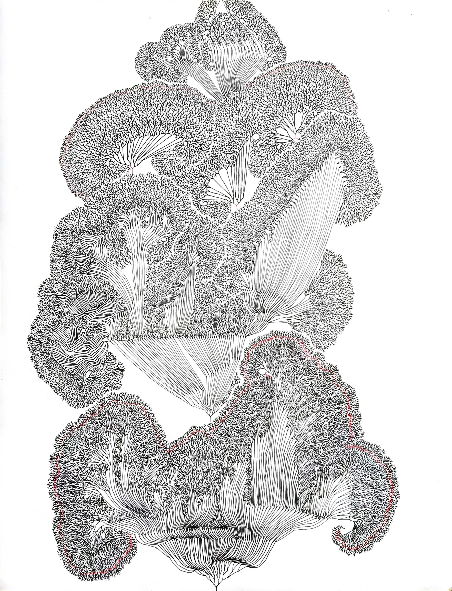

ns
<!DOCTYPE html>
<html lang="de">
<head>
  <meta charset="UTF-8">
  <meta name="viewport" content="width=device-width, initial-scale=1.0">
  <title>Archiv – Zeichnungen & Linienwerke</title>
  <style>
    body {
      font-family: Arial, sans-serif;
      margin: 0;
      background-color: #fff;
      color: #111;
      line-height: 1.6;
    }
    header {
      text-align: center;
      padding: 2rem;
      font-size: 2rem;
      border-bottom: 1px solid #eee;
    }
    .section {
      max-width: 1000px;
      margin: 0 auto;
      padding: 2rem;
    }
    h2 {
      border-bottom: 1px solid #ddd;
      padding-bottom: 0.5rem;
    }
    .grid {
      display: grid;
      grid-template-columns: repeat(auto-fit, minmax(280px, 1fr));
      gap: 2rem;
      margin-top: 2rem;
    }
    figure {
      margin: 0;
      text-align: center;
    }
    img {
      width: 100%;
      height: auto;
      box-shadow: 0 2px 6px rgba(0,0,0,0.1);
    }
    figcaption {
      margin-top: 0.5rem;
      font-size: 0.9rem;
    }
    .sold-dot {
      display: inline-block;
      width: 10px;
      height: 10px;
      background-color: red;
      border-radius: 50%;
      margin-left: 5px;
    }
    nav {
      text-align: center;
      margin-bottom: 2rem;
    }
    nav a {
      text-decoration: none;
      font-weight: bold;
      color: #222;
    }
  </style>
</head>
<body>

<header>Archiv – Zeichnungen & Linienwerke</header>

<nav>
  <a href="index.html">⟵ Startseite</a>
</nav>

<section class="section">
  <h2>Frühwerke</h2>
  <div class="grid">
    <figure>
      
      <figcaption>Baumzeichnung (2016) </figcaption> 
    </figure>
    </div>

  <section class="section">
  <h2>Aktuelle Linien</h2>
  <div class="grid">
    <figure>
      
      <figcaption>Linienstruktur I (2025)</figcaption>
    </figure>
  </div>
</section>
    
<section class="section">
  <h2>Aktuelle Linien</h2>
  <div class="grid">
    <figure>
      
      <figcaption>Fraktal der Entscheidung (2025)</figcaption>
    </figure>
    <figure>
      
      <figcaption>Der Sicherste Ort (2025)<span class="sold-dot" title="nicht mehr im Besitz"></span></figcaption>
    </figure>
  </div>
</section>

<section class="section">
  <h2>Weitere Zeichnungen</h2>
  <p>Weitere Werke folgen nach Sichtung und Digitalisierung der Archivmaterialien.</p>
</section>

</body>
</html>
